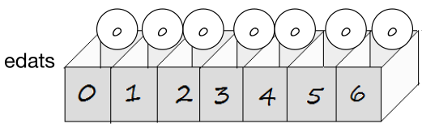
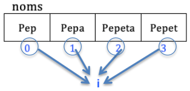
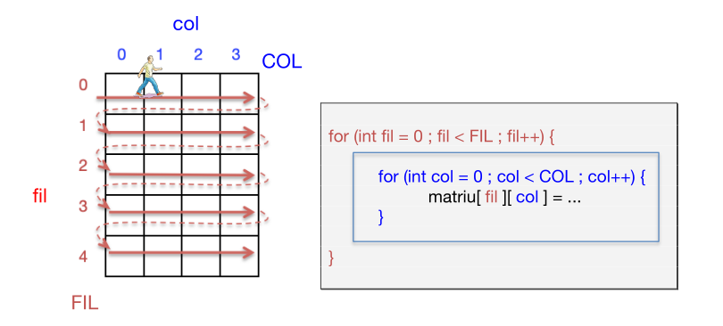

UD6. Arrays en Java
1. Introducció
Tots els tipus de dades que hem vist fins ara són tipus bàsics (també anomenats simples, atòmics o elementals). Es caracteritzen perquè les variables d'eixos tipus només poden guardar un únic valor en cada moment.
Ara vorem com guardar molts valors en una sola variable. Eixa variable serà d'un tipus de dades compost.
Per a què serveixen estos tipus de dades?
Imaginem que volem un programa que demana les notes de 100 alumnes i després en modifique una en concret.
Amb variables simples, el programa seria molt farragós:
En canvi, usant variables compostes el programa seria més fàcil i curt:
- Si foren més alumnes, simplement caldria canviar este número.
Usant variables simples encara es complicaria més si férem altres operacions amb les moltes notes, com calcular la màxima, la mínim, la mitja, ordenar-les...
Amb este exemple hem introduït les variables compostes, però vorem en detall com crear-les, com introduir valors en elles, com accedir a eixos valors, etc.
Hi ha molts tipus de dades compostes. Alguns són:
- Arrays
- D'1 dimensió: vectors
- De 2 dimensions: matrius
- De 3 dimensions: arrays tridimensionals
- Cadenes: per a textos
- Llistes: grandària ampliable i amb moltes utilitats
- Objectes: per a guardar dades de distints tipus
2. Vectors en Java
Definició de vector
Conjunt finit d'elements del mateix tipus, als quals podem accedir mitjançant el nom del vector i un índex (posició dins del vector).
Com hem dit abans, un vector és un array d'1 dimensió. Per exemple, el lloc on podem guardar les notes de 100 alumnes.
La forma general de declarar un vector és:
tipusDeDades[] nomVector = new tipusDeDades[dimensió];
tipusDeDades: un dels tipus simples coneguts (int, char, boolean, float, double...) o bé una classe(ja ho veurem) com String, etc.dimensió: Quantitat d'elements que tindrà el vector.
Estem fent dues coses: declarant el vector i assignant-li memòria. Ja vorem que a vegades convé separar estes dos coses. En eixos casos ho farem així:
| Java | |
|---|---|
- Declarem el vector.
- Li assignem memòria.
- Si tornem a assignar una nova memòria per al vector, perdrem les dades que tenia abans.
Exemple
Veiem amb este exemple les 2 formes de declarar un vector:
| Java | |
|---|---|
- Altre vector. Es poden posar els [corxets] davant o darrere del nom del vector quan el declarem
En Java, per defecte, els vectors d'enters s'inicialitzen a 0:

Declarar un vector amb valors inicials
Igual que es fa en les variables simples, podem donar valors inicials en el moment de declarar-lo. EN este cas no s'indica la dimensió del vector, sinó que el vector tindrà tants elements com valors indicats:
| Java | |
|---|---|
- Podem fer-ho d'eixes dos formes: amb el new int[], i sense.
Però si volem donar un conjunt de dades després de la declaració, només així:
2.1. Tractament de cada element del vector
Cada element del vector es pot tractar com una variable simple. Per a accedir a cada element del vector, ho farem amb el nom del vector i l'índex corresponent tancat entre claudàtors:

Com ja hem dit, cada element del vector es pot tractar com una variable simple. Per tant, vegem amb exemples què podem fer amb cada element del vector:
- Assignar un valor a un element del vector:
| Java | |
|---|---|
- Consultar el valor d'un element del vector:
| Java | |
|---|---|
2.1.1. L'Índex de l'element d'un vector
L'índex és la posició de cada element del vector. Recordem que, per exemple, amb l'index 3 podrem accedir a la 4a posició del vector (ja que la primera posició és la 0).
Què pot ser un Índex?
L'índex del vector és un enter. Podrà ser una constant, variable o expressió, però entera:
| Java | |
|---|---|
- Ací l'índex és l'expressio numPersona-1. El -1 és perquè si un array té 7 elements, estos queden indexats del 0 al 6. Per això, si vull accedir al 3r element, hauré de fer-ho posant un 2 a l'índex.
En este cas, si per teclat es contesta, per exemple, un 9, el programa avostaria degut a l'error ArrayIndexOutOfBoundsException. Vegem per què:
Límits de l'índex
El mínim índex que podem posar en un vector és el 0. El màxim índex és un menys que la dimensió del vector. Si accedim a una posició d'un vector fora dels seus límits donarà error quan s'execute el programa ja que estarem accedint a una zona de memòria no reservada per al vector. És més: eixa zona de memòria podria estar reservada per a altra variable.
| Java | |
|---|---|
- Podrem accedir a les posicions 0 a 6 del vector
- Qualsevol d'eixes intruccions donaria l'error d'execució ArrayIndexOutOfBoundsException
- En Python amb el -1 accedirem a l'última posició, però en Java dona ERROR!
2.2. Recorregut d'un vector
Imaginem que un vector té 1000 posicions i volem mostrar-les totes. Com ho fem?
Ja vorem per què NO podem fer-ho amb un únic println del nom del vector. Per tant, haurem de recórrer tots els seus components, amb un bucle. Tenim 2 opcions:
a. Recórrer el vector amb un for tradicional:

- L'índex del vector és una variable entera (en este cas i) que anirà agafant tots els possibles valors de les posicions del vector (0, 1, 2 ... 999).
- En compte de posar 1000, usarem sempre la propietat length del vector (nomVector.length). Així, si després el programador canvia eixe 1000 per altre número, no ho ha de canviar en altres parts del programa.
b. Recórrer el vector amb un for tipus foreach:
- Este tipus de bucle serveix per a recórrer llistes (arrays, etc) quan no ens faça falta accedir a les posicions de cada element.
- Farà tantes passades com elements tinga el vector.
- En cada passada, en la variable nom (del mateix tipus que el contingut del vector) s'anirà copiant el contingut de cada posició.
- Amb esta forma no podem modificar els elements del vector. Només consultar-los.
2.2.1. Els noms de vector i els noms dels índex
Suposem que tenim un vector per guardar les notes dels alumnes:
- El nom del vector sol ser plural, ja que guarda molts valors. En este exemple el nom del vector és notes i no nota. A més ha de tindre un nom significatiu: notes. No és convenient dir-li vector1, ni dades, etc.
| Java | |
|---|---|
- El nom de l'índex del for sol ser la variable i però a vegades convé posar un nom més significatiu. Podria ser nota? No, ja que eixa variable no guardarà la nota d'un alumne, sinó una posició d'un alumne, un identificador de l'alumne. Podríem dir-li, per exemple, alumne, ja que tindrem l'alumne 0, l'alumne 1 ... i l'alumne 49.
| Java | |
|---|---|
- El nom de la variable del foreach convé que es diga igual que el vector però en singular, ja que el contingut de la variable serà el contingut de cada element del vector.
2.3. Inicialització d'un vector
Recordem que un vector el declarem així:
| Java | |
|---|---|
Aixpo posa un 0 en cada component. Si el vector fora de booleans, cada element tindria un false, etc. I si volem que inicialment tinguen un altre valor? Podem fer-ho de distintes formes:
a. Indicant els distints valors (ja ho hem vist)
En el moment de la creació:
| Java | |
|---|---|
En altre moment:
| Java | |
|---|---|
b. Recorrent el vector amb un bucle que faça assignacions
Igual que abans hem usat un for per a mostrar tots els elements del vector, també podem usar un for per a assignar un valor a cada element:
| Java | |
|---|---|
- Recorda usar el .length (no el 7)
Compte amb el foreach
No ho podem fer amb un foreach perquè ENS FALTARIA L'ÍNDEX!.
2.4. Representació gràfica d'un vector
Davant d'un problema sobre vectors, hem de plantejar-nos el dibuixet del vector amb les variables que li afecten.
Per exemple, volem guardar les notes de 25 alumnes. Suposant estes definicions:
| Java | |
|---|---|
... faríem la següent representació gràfica:
I a partir del dibuix és més fàcil fer el codi per a guardar totes les notes del vector:
| Java | |
|---|---|
Exercici 1. Vectors en Java
CONSELL: Abans de fer exercicis sobre vectors, fes el dibuixet del vector (o vectors) posant l'índex, nom de vector, grandrària... (com a l'apartat anterior).
Fes un programa que faça el següent:
a. Crear un array de nom edats, de qAlu elements de tipus enter, per a guardar les edats de qAlu alumnes. S'ha de demanar la variable qAlu a l'usuari.
b. Omplir el vector demanant les dades per teclat.
c. Demanar un número d'alumne i mostrar la seua edat. El número d'alumne serà la posició dels elements (0 a 9). No ha de donar error si s'introdueix un número incorrecte.
d. Mostrar quants alumnes són menors d'edat.
e. Mostrar l'edat mínima dels alumnes i a quin número d'alumne correspon. Si són molts alumnes que tenen la mínim edat, mostra el primer que aparega.
f. Posar en altre vector de nom majors aquells números d'alumnes que són majors d'edat.
g. Recórrer el vector majors per a mostrar els números d'eixos alumnes i les edats corresponents.
2.5. Vectors paral·lels
Suposem que volem guardar les notes (double) de 10 alumnes i els respectius números d'expediants (int). Per a això necessitariem un vector de 10 números amb decimals per a guardar les notes i una altre vector de 10 números enters per a guardar els números d'expedients.
notes [8.0][9.3][5.6][7.3][7.0][5.4][6.7][4.2][3.8][9.4]
expedients [133][137][139][138][136][130][140][142][131][134]
L'alumna que figura a la posició número 2 (0, 1 i 2) ha tret de nota un 5.6 i té el número d'expedient 139
Eixos 2 vectors diem que són paral·lels ja que tenen la mateixa quantitat d'elements, i en la mateixa posició de cada vector guarda informació del mateix objecte (en este cas, del mateix alumne).
AVANTATGE: un únic bucle per a recórrer diversos vectors paral·lels.
| Java | |
|---|---|
Exercici 2. Vectors paral·lels
Fes un programa en Java que demane el número d'expedient, nota i edat de 15 alumnes (amb un únic bucle). Posteriorment, que mostre en 3 columnes les 3 dades de cada alumne. Després, es demanarà per teclat un número d'expedient i es mostrarà per pantalla la seua edat i nota.
2.6. Tractament de tot el vector en conjunt
Abans de vore les operacions que podem fer en un vector en conjunt (no component a component), hem de tindre en compte que si usem el vector sense indicar la posició, estem accedint a una adreça de memòria RAM (on comencen les dades que guarda el vector).
Exemple
Suposem que tenim estos dos vectors:
i pososem que, quan s'ha executat el programa, se'ls han assignat estes zones de memòria RAM (que comencen en la 1004 i en la 1024):
A la vista d'este esquema, quan usem el nom d'un vector sense indicar l'índex (ni els claudàtros, clar), estarem accedint a eixe número 1004 o 1024, no al contingut del vector.
Per tant, hem d'anar en compte amb les operacions que fem amb els vectors sencers en conjunt, ja que, possiblement, no estarem fent allò que pretenem. Ara ho vorem.
2.6.1. Copiar vectors
Què pasa si copiem un vector a un altre?
| Java | |
|---|---|
- No donarà error però està fent que notesPepa apunte a la mateixa adreça que notesPep
Efectivament, si mostrem ara les notes de Pepa, vorem que sí que mostra 5, 7, 6 (en compte de 7, 8, 8 que tenia abans), però... compte! Si modifiquem una nota de Pep, també estarem modificant la de Pepa, i al revés.
SOLUCIÓ: Si realment volíem que notesPepa tinguera els mateixos valors que notesPep (conservant l'adreça de memòria que tenia) caldria copiar component a component, mitjançant un bucle. Vorem després com fer-ho.
2.6.2. Comparar vectors
Què passa si comparem vectors?
No es compararan els seus valors sinó l'adreça de memòria que ocupen. Per tant:
| Java | |
|---|---|
- Els 2 vectors tenen els mateixos valors però en distinta zona de memòria.
- Donarà false ja que, encara que tinguen els mateixos valors, l'adreça de memòria és distinta.
- Els 2 vectors apunten a la mateixa zona de memòria.
- Estem canviant una nota de Pepa... i de Pep!
- Donarà true ja que l'adreça de memòria és la mateixa.
2.6.3. Altres operacions
No podem mostrar "de colp" un vector ni assignar-li un valor a tots els components:
- No donarà error de compilació ni d'execució però mostrarà l'adreça de memòria RAM on comença el vector (un número en hexadecimal).
- Error de compilació.
SOLUCIÓ: tant per mostrar els elements d'un vector, com per assignar un mateix valor a cada element, cal fer-ho mitjançant un bucle.
Exercici 3. Operacions amb vectors en conjunt
a. Crea 3 vectors d'enters (v1, v2 i v3) sense reservar memòria (sense indicar la grandària ni posar valors inicials).
b. Pregunta per teclat quantes dades es volen guardar en els vectors (només 1 quantitat, igual per als tres).
c. Reserva memòria al vector1 amb eixa quantitat d'elements introduïda.
d. Ompli v1 amb dades introduïdes per teclat.
e. Copia el vector v1 al vector v2, en una sola operació.
f. Copia el vector v1 al vector v3, copiant component a component. Primer caldrà reservar memòria per a v3.
g. Mostra per pantalla si v1 és igual a v2, en una sola operació. Fes el mateix per a v1 i v3.
h. Mostra per pantalla si v1 és igual a v3, component a component (però només haurà de dir: "vectors iguals" o "vectors diferents").
i. Mostra el que hi ha en cada posició de cada vector (format lliure).
j. Fes que els 3 vectors ara tinguen 5 dades cadascun. I que totes les dades tinguen el valor -1. Torna a mostrar el contingut dels vectors.
k. Pensa quin resultat de mostrar per pantalla i comprova el resultat després d'executar el programa.
3. Matrius en Java
Són com els vectors que hem vist, però en 2 dimensions (arrays bidimensionals). També poden haver *arrays de 3 dimensions, de 4...
S'utilitzen per a guardar moltes dades, del mateix tipus, quan cadascuna d'eixes dades es pot identificar per dos (o més) índexos. Per exemple:
- Les notes dels alumnes en distintes avaluacions:
- Els taulers de jocs:
- Una imatge .bmp o .jpg es guarda internament com una matriu de 3 dimensions. Cada element representa un píxel de la foto, i està indexat per una posició de la foto (alt, ample) i per un valor depenent del color (roig, verd o blau).
Per exemple, suposant que el verd és la posició 2, si volem que el píxel 150,300 tinga una tonalitat de 10 verd, podríem fer: foto[150][300][2] = 10;
3.1. Declaració de matrius en Java
Podem definir una matriu com un conjunt finit d'elements del mateix tipus, als quals podem accedir mitjançant el nom de la matriu i dos índexs.
Exemple de declaració d'una matriu
| Java | |
|---|---|
- O bé [EXER][ALU], però la disposició que triem s'ha de respectar en tot el programa.
3.2. Una matriu és un vector de vectors
També podem definir una matriu com un vector on cadascun dels seus elements és un altre vector.
Veiem-ho amb l'exemple anterior, on volem guarar les notes que han tret 6 alumnes en cadascun dels 5 exercicis.
| Java | |
|---|---|
En el següent gràfic (part esquerre) veiem que, per a guardar les notes dels 6 alumnes tenim el vector de notes. El que passa és que cada alumne no té una nota, sinó 5. És a dir, en cada posició del vector de notes, hi ha un altre "vectoret".
En el gràfic (part dreta) veiem que eixa estructura de vector de vectors és realment una matriu. Aleshores, tenim que:
- notes: és tota la matriu (les notes de tots els alumnes en tots els exercicis).
- notes[2]: és un vector de notes (les notes de l'alumne 2).
- notes[4][3]: és un element nota (la nota de l'alumne 4 a l'exercici 3).
3.3. Inicialització de matrius
Ja hem vist que, igual que en els vectors, les matrius es declaren així:
tipusDeDades nomMatriu[][] = new tipusDeDades[qFiles][qColumnes];
O bé, igual que en els vectors, podem separar la part de la reserva de memòria:
| Java | |
|---|---|
- Declarem la matriu
- Li assignem memòria
Igual que en els vectors, en compte de la reserva de memòria, es poden donar uns valors inicials als elements de la mtriu.
Per exemple, si volem que tinga estos valors:
| 10 | 20 | 30 |
| 40 | 50 | 60 |
Farem el següent:
| Java | |
|---|---|
- Cada "grupet de números" és la inicialització de cada vector de la matriu. Per tant, hauran de ser de la mateixa grandària.
3.4. La propietat length en les matrius
Suposem que tenim esta matriu:
| Java | |
|---|---|
- Amb
m.lengthtindrem eixe 6 (quantitat de files) - Amb
m[0].lengthtindrem eixe 5 (quantitat de columnes)
Ja vorem que, en ocasions, en alguna part del programa no sabrem la quantitat de files i columnes que té eixa matriu m (no coneixerem eixe 6 i 5). En eixos casos accedirem amb m.length per a accedir a la grandària de la 1a component de la matriu, i amb m[0].length per a accedir a la grandària de la 2a component de la matriu. Però per què?
Recordem que una matriu és un "vectorot" de "vectorets". Per tant, m.length és la longitud d'eixe "vectorot". I com m[0] és el primer dels "vectorets", m[0].length és la longitud d'eixe "vectoret" (i dels altres, ja que tots són igual de grans). Sabent això, també podrem accedir als "cantons" de la matriu, etc. És a dir:
3.5. Recorreguts d'una matriu
Si volem mostrar tots els elements d'una matriu, o assignar-los un valor, etc., haurem de recòrrer-la tota. És a dir, haurem de passar per cadascun dels seus elements. Podem fer eixe recorregut de 2 maneres: per files o per columnes.
Recorregut per files:

Recorregut per columnes:
Però si només volem recórrer una fila, per exemple la 2, NO hem de recórrer tota la matriu, sinó simplement la fila que volem:
I si volem recórrer només una columna, per exemple la 1, farem:
Un error freqüent és que, per a recórrer una columna (per exemple la 1), es recórrega tota la matriu:
Exercici 5 RESOLT
Estadística de temperatures
A un centre meteorològic volem guardar les temperatures d'un mes (31 dies), mesurades 4 voltes al dia (a les 0, 6, 12 i 18 hores de cada dia).
Al principi del programa es demanaran totes les temperatures del mes: per cada dia es demanaran les 4 temperatures.
posteriorment, el programa presentarà un menú perquè l'usuari faça una anàlisi de les dades recol·lectades:
| Text Only | |
|---|---|
1 2 3 4 | |
Hem de demanar 124 temperatures !!!
Abans de pintar el menú, el programa ha de demanar totes les temperatures del mes. Això implica que cada cop que executes el programa, hauràs d'introduir-les totes. Per a no fer-ho tant pesat, un cop et funcione tot això, pots posar la introducció de dades dins d'un comentari de bloc.
i reemplaçar-lo per una assignació directa de valors a la matriu, generada amb ChatGPT com segueix:
Estic fent un programa en Java, on vull guardar les temperatures d'un mes (31 dies), mesurades 4 voltes al dia (a les 0, 6, 12 i 18 hores de cada dia). Necessite un codi Java que em genere una matriu de 31 x 4.
Intenta que els valors siguen realistes, per a un clima mediterrani. Per exemple, entre 10 i 30 graus a l'estiu, i entre 0 i 20 graus a l'hivern. No vull valors aleatoris, sinò que tel's inventes tu.
Em pots generar el codi Java que em cree la matriu i li assigne valors a cada element?
Repetidament es mostrarà el menú, es demanarà una opció i s'executarà, fins posar l'opció 0.
Plantejament de la solució
Caldrà guardar les dades en una matriu. Podem plantejar-ho de moltes formes. Per a vore l'estructura de dades que ens farà falta, hem de fer-nos un "dibuxet" amb el que volem. Així veiem que ens vindria bé una matriu de 32 x 4:
(*) Si definiríem una matriu de 31 files, els números de fila anirien de 0 a 30 però els dies són de l'1 al 31. Per tant, definiriem una matriu de 32 files, i només usarem de la fila 1 a la 31. Simplement, no usarem la fila 0.
| Java | |
|---|---|
1 2 3 4 5 6 7 8 9 10 11 12 13 14 15 16 17 18 19 20 21 22 23 24 25 26 27 28 29 30 31 32 33 34 35 36 37 38 39 40 41 42 43 44 45 46 47 48 49 50 51 52 53 54 55 56 57 58 59 60 61 62 63 64 65 66 67 68 69 70 71 72 73 74 75 76 77 78 79 80 81 82 83 84 85 86 87 88 89 90 91 92 93 94 95 96 97 98 99 100 101 102 103 104 105 106 107 108 109 | |
Exercici 6. Matrius en Java
Modifica l'exercici anterior sobre l'estadística de temperatures, afegint estes opcions al menú:
- 4.Mostra temperatura en un dia i hora en concret.
- 5.Mostra la mínima i la màxima d'un dia.
- 6.Canviar una temperatura.
Pensa altres possibles opcions que podries fer i implementa-les.
Exercici 7
Fes un programa que guarde en una matriu les notes de programació que han tret 15 alumnes en cadascuna de les 3 avaluacions. A continuació trau de cada alumne: el número (1 a 15), la nota mitjana i quantes suspeses. També trau de cada avaluació: el número (1 a 3), la nota màxima i la mínima. Per exemple, l'eixida de resultats podria ser:
| Exemple de sortida | |
|---|---|
Per a evitar el demanar 45 notes, un cop tingues programat el codi de introducció de dades, pots comentar-lo i assignar valors directament a la matriu.
Exercici 8
Modifica el programa anterior perquè es puguen guardar, en la mateixa matriu (ara serà tridimensional), a més de les notes del mòdul de programació, les de bases de dades i les de llenguatge de marques. Mostra quantes avaluacions han suspés en total els alumnes.
4. Cadenes de caràcters
Com es guarda un nom de persona, per exemple? Alguns llenguatges com C, ho guarden en un vector de caràcters. Però en Python i Java ho tracten com un tipus de dades, amb moltes operacions disponibles sobre variables d'eixe tipus.
- Python té el tipus de dades str
- Java té la classe String (una classe és més que un tipus, ja ho vorem)
4.1. Cadenes de Java: la classe String
4.1.1. Declaració de variables String
- Ja vorem que, més que "variables de tipus String", realment són "objectes de la classe String".
- En Java es tanquen entre "cometes dobles". En Python, "cometes dobles" o 'simples'.
4.1.2. Alguns mètodes sobre cadenes en Java
Com ja hem dit, String no és un tipus, és una classe (les classes comencen en majúscula). I, per tant, tindrà uns mètodes associats, per a treballar amb cadenes. Vegem uns exemples. Partim que tenim: String nom = "Pep Garcia"
| MÈTODE DE CADENES JAVA | RETORNA | EXPLICACIÓ |
|---|---|---|
| nom.length() | 10 | Longitud de la cadena. En un vector seria nom.lenght (sense parèntesis). |
| "Hola".length() | 4 | |
| nom.charAt(0) | 'P' | Primera lletra. |
| nom.charAt(4) | 'G' | Lletra posició 4. En un vector seria nom[4] |
| nom.charAt(nom.legth()-1) | 'a' | Última lletra. |
| nom.charAt(10) | ERROR | No existeix la posició 10 en nom. |
| nom.substring(4, 7) | "Gar" | De la posició 4 a la 6. |
| nom.substring(4) | "Garcia" | De la posició 4 al final. |
| nom.indexOf('a') | 5 | Primera posició de la 'a'. |
| nom.indexOf('x') | -1 | Si no troba la lletra. |
| nom.indexOf('a', 6) | 9 | Primera posició de la 'a' a partir de la 6. |
| nom.indexOf("Gar") | 4 | Primera posició del text "Gar" |
| nom.contains("Gar") | true | Per a saber si una cadena n'inclou altra |
| nom.equals("Pep Garcia") | true | Per a saber si 2 cadenes són iguals. |
| nom.equals("pep garcia") | false | |
| nom.equalseIgnoreCase("pep garcia") | true | Per a saber si 2 cadenes són iguals sense importar les majúscules. |
| nom.compareTo("Pop") | núm. < 0 | Pep Garcia < Pop |
| "Pop".compareTo(nom) | núm. > 0 | Pop > Pep Garcia |
| nom.compareTo("Pep Garcia") | 0 | Cadenes iguals |
| nom.toLowerCase() | "pep garcia" | A minúscules. |
| nom.toUpperCase() | "PEP GARCIA" | A majúscules. |
| " Hola, Pep! ".trim() | "Hola, Pep!" | Lleva espais davant i darrere. |
| nom.replace("Pep", "Josep") | "Josep Garcia" | Reemplaça subcadena. |
| nom.replace('a', 'A') | "Pep GArciA" | Reemplaça caràcter. |
| String s = "IES Jaume II"; String[] paraules = s.split(" "); |
["IES", "Jaume", "II"] |
Obté un vector de Strings les parts de la cadena, segons el caràcter separador (igual que en Python). |
Exemple d'ús dels mètodes de les cadenes en Java
En executar-se dona la següent sortida:
Exercici 10. Cadenes de caràcters en Java
Programa en Java que demane un text per teclat. Per cada paraula hauràs de dir la seua longitud i si està en majúscules o minúscules. Després mostra la paraula més llarga i l'última paraula que apareixeria en un diccionari.
PISTA: utilitza split, etc.
5. Llistes dinàmiques
Els arrays que hem vist en Java són llistes estàtiques: tenen una grandària fixa que s'estableix al principi i ja no pot variar durant l'execució del programa. Té sentit que siga així per a certes utilitats, ja que el dia sempre tindrà 24 hores, els alumnes sempre tenen 3 avaluacions, un tauler d'escacs sempre és 8x8...
Però a voltes la quantitat d'elements podrà canviar. Per exemple, podem tindre en un principi20 alumnes però en poden vindre més (o anar-se'n). Per a això estan les llistes dinàmiques: tindran una grandària inicial però podran canviar durant l'execució del programa. De fet, les llistes que hem vist en Python són dinàmiques.
Hi ha diferents tipus de llistes dinàmiques o "col·leccions" de dades. Cada llenguatge de programació té les seues. Algunes de Java i Python són:
| COL·LECCIONS | |||
|---|---|---|---|
| Llistes | Conjunts | Diccionaris | |
| Els elements estan ordenats? | SÍ | NO | NO |
| Els elements estan indexats? | SÍ | NO | SÍ, per la clau |
| Permet elements repetits? | SÍ | NO | NO |
A continuació vorem un esquema resum dels principals mètodes o operacions que es poden fer amb els diferents tipus de col·leccions de Java i Python:
| MÈTODES DE LES COL·LECCIONS | ||||||
|---|---|---|---|---|---|---|
| Llistes | Conjunts | Diccionaris | ||||
| Llenguatge | J | P | J | P | J | P |
| Classe | ArrayList | list | HashSet | set | HashMap | dict |
| Afegir al final | .add | .append | - | - | - | - |
| Afegir a un lloc | .add | .insert | - | - | - | - |
| Afegir a cap lloc | - | - | .add | .add | put | [clau]= |
| Modificar | .set | [i]= | - | - | put | [clau]= |
| Esborrar posició | .remove | .pop | - | - | - | - |
| Esborrar element | .remove | .remove | .remove | .remove .discard |
.remove(clau) | .pop(clau) |
| Buidar | .clear | .clear | .clear | .clear | .clear | .clear |
| Consultar posició | .get | [i] | - | - | .get(clau) | .get(clau) [clau] |
| Saber si està un element | .contains .indexof |
in .index |
.contains | in | .containsKey .containsValue |
in |
| Longitud | .size | len | .size | .size | .size | .size |
| Ordenar | Collections.sort | .sort | - | - | - | - |
| Altres | .union .intersection .difference .issubset .issuperset |
.values .keyset |
.values() .keys() .items() |
|||
A continunació vorem en detall les col·leccions que més s'utilitzen: les llistes. Java usa la classe ArrayList; Python, la classe list.
5.1. Llistes en Java: la classe ArrayList
Un ArrayList és una llista en Java. La diferència entre un vector i una llista és que la grandària d'un vector no es pot modificar i la d'una llista, sí. A més, es poden fer moltes més coses en una llista. Ara vorem com fer tot això en Java, amb exemples:
Exemples d'ús de llistes en Java
- Cal importar eixa classe Arrayist
- Creem una llista d'amics.
- Afegim elements al final:
["Pep", "Pepa", "Pepet"] - Afegim en la 2a posició:
["Pep", "Pepeta", "Pepa", "Pepet"] - Consultem el 1r element ("Pep")
- Comprovem si està Pepa:
true - Posició on està Pepa:
2 - Posició on està Josep:
-1 - Consultem la grandària de la llista:
4 - Mostrem la llista "de colp":
[Pep, Pepeta, Pepa, Pepet] - Recorrem la llista amb un for tradicional
- Recorrem la llista amb un bucle foreach
- Modifiquem el 2n element:
["Pep", "Pau", "Pepa", "Pepet"] - Ordenem la llista:
["Pau", "Pep", "Pepa", "Pepet"] - Esborrem el 2n element:
["Pau", "Pepa", "Pepet"] - Esborrem l'element Pepet:
["Pau", "Pepa"] - Esborrem la llista:
[]
Per practicar més...
En www.w3schools.com podem consultar i practicar l'ArrayList (llistes) i altres tipus de col·leccions, com els HashSet, els HashMap (diccionaris), etc.
Exercici 12. Llistes en Java
Fes un programa en Java sobre una agenda d'amics. Haurà de mostrar el següent menú, demanar una opció i executar-la. Tornarà a fer-se el mateix fins eixir del programa:
- Introduir un amic. Es demanarà el nom de l'amic, si ja existia l'amic en la llista avisarà i no el tornarà a posar.
- Esborrar un amic. Es demanarà el nom i l'esborrarà. Avisarà que s'ha esborrat o que no estava.
- Mostrar la llista. Cada amic en una línia. Al final dirà quants amics hi ha.
- Mostrar per inicial. Es demanarà una lletra i es mostraran tots els amics que comencen per eixa lletra.
- Modificar amic. Es demanarà una posició i un nou nom i el modificarà. Avisarà del resultat.
- Ordenar la llista alfabèticament.
- Buidar la llista.
- Eixir.
5.3. Diccionaris de Java: la classe HashMap
Un HashMap és un diccionari en Java. Un diccionari està format per parelles clau-valor, on no té importància l'ordre de les parelles.
Veiem-ho amb un exemple, on volem guardar el preu de cada article:
Exemple HashMap
Però els HashMap tenen més mètodes: per a esborrar una entrada, esborrar tot el diccionari, comprovar si està buit, comprovar si existeix tal valor...
Pots investigar més creant un programa al teu IDE: posael nom d'un HashMap i el punt, i apareixeran tots els mètodes amb informació de com emprar-los. O bé: